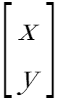

基礎知識
戦闘関係

ここでは、スーパーファミコンの特徴のひとつ、背景拡大・縮小・回転機能について、本作で使用している場面の解説をする。
背景について、まずは背景グラフィックと効果などに目を通していただきたい。
また、やや高度な数学（三角関数、線型代数学における行列）を含む説明を行うが、わからなければ適当に飛ばしてもらっても構わない。
拡大・縮小・回転機能だが、BGMode7を使わなくても可能である。
他でもない、戦闘開始時の三角形が回転しながら小さくなって背景をマスクしていくウィンドウ処理も、ウィンドウマスクの縮小・回転処理であるが、BGMode7は使っていない。
ウィンドウのマスク処理であれば、マスクの境界部分の座標だけ計算すれば良いのだが、画像全体を回したり拡大縮小する場合は全座標（全ピクセル、256×242 = 61952ピクセル）の計算をしなければならないため、必要なプログラムも計算量も膨大になる。
さらにいえば回転や拡大の場合、画面以上のサイズの画像の計算も行わなければならない。
スーパーファミコンのBGMode7、拡大・縮小・回転機能は、そういった計算の手間をある程度省き、かつ高速に計算してくれる機能、と考えて良い（と思う）。
画像を用意して、あとは「この画像をこの角度だけ右（または左）回転させる、または拡大縮小するので、座標を計算して表示させてくれ」という、拡大縮小の度合いや角度の指示などを行えば変換してくれるのがBGMode7（背景拡大・縮小・回転）というモードになる。
（という理解でたぶん間違っていない……はず）
本作で拡大・縮小・回転機能を使っている箇所は、
あたりである。他にもあるかもしれない。
スーパーファミコンは背景（BG）を最大4枚扱うことが可能であるが、「何枚使えるか」「それぞれ何色使えるか」をBGMode0～7の8種類のモードから選択し、I/Oポートアドレス[$00:2105]に値を書き込んで決める。
本作の場合、通常のゲーム画面はBGMode1（BG1・16色, BG2・16色, BG3・4色）を使っている。
背景拡大・縮小・回転機能が使えるのはBGMode7のみで、BGMode1の背景設定とはかなり異なる。
まず、BGMode7は背景を1枚、BG1しか使えない。厳密には設定次第でBG2も使えるそうであるが、本作では多分使っていない。
スプライト（OBJ）は通常通りに設置できるため、スプライトにもう1枚分背景の画像を設置するという方法もある。
実際、キャプテンスクウェアでは、BG1に回転するキャプテン＋背景、スプライトに「CAPTAIN SQUARE」ロゴや下部の「©ARUMAT SOFT 2099」とフクロウマークを表示させている。
BGMode7の仕様についてもう少し記しておく。
BGMode1の場合、BG1のタイルデータはVRAMアドレス$0000～$5FFF（タイル1個のデータは32バイト）、BGマップデータは$8000～$8FFF（タイル1個（8×8ピクセル）につき、2バイトのデータ）、というように、画像（タイル）データと、タイルをどう並べるかのBGマップデータを分けてVRAMに配置していた。
だが、BGMode7は、背景サイズが128×128タイル（1024×1024ピクセル）で固定。
BGマップとタイルデータだが、VRAMのアドレス$0000から順に、
BGマップ1バイト→タイルデータ1バイト（1ピクセル）→BGマップ1バイト→タイルデータ1バイト（1ピクセル）→……
と、1バイトずつ交互に並ぶ。BGMode1などとはまったく異なる。
また、VRAMアドレス$0000～$7FFFしか使用しない。
BGMode1ならBGマップはタイル1個につき2バイトのデータだが、BGMode7だと1バイトしかない。
タイル番号$00～$FFのデータが格納されているだけである。
BG優先度、X反転、Y反転を設定することはできない。
（ただし、$00:211Aで設定することにより、画面全体の反転はできるらしい）
128×128タイルのBGマップだから、横1行分が128（$80）バイト。
128×128タイルなら$80 * 80 = $4000バイトのデータになる。
タイルデータは1バイトに1×1ピクセルのデータが入り、カラーパレット$00～$FFの値が入っている。
つまり、ビット深度が8bppであり、BGMode1だとカラーパレット（CGRAM）に格納できる最大の色数256色が扱えるということである。
タイルサイズは8×8ピクセルなので、タイル1個分のデータが64バイト（$40バイト）ということになる。
タイルに使えるのはBGマップとタイルデータで半分ずつだから、$4000バイト分、つまりタイル$100（256）個分である。
なぜ1バイトずつ交互にBGマップとタイルデータが並んでいるのかというと、インターリーブというデータ読み込み高速化手法があり、
スーファミのCPUから、VRAM内のBGマップとタイルデータを担当する部分（のようなもの）に並列にデータを送った方が処理速度が上がるから、ということらしい。
カラーパレット（CGRAM）の仕様はBGMode1と変わらない。
上の通りBGMode7だとカラーパレットの256色どれでも指定できる。
ただ、スプライトも同時に表示するならスプライト用カラーパレットが兼用になる（CGRAMアドレス$0100～$01FFがスプライト用カラーパレット割り当て領域）。
VRAMにはBGマップとタイルデータを送るのみである。
他モードと同じく、ゲーム画面に画像を表示できるが、それだけである。
拡大縮小・回転は、I/Oポートアドレスに書き込むことで指示する。
BGMode7に関わるI/Oポートアドレスは以下になる。
| アドレス | 名前 | 内容 |
|---|---|---|
$00:211A | M7SEL | 画面モード7初期化 |
$00:211B | M7A | Mode7拡大縮小回転用マトリックスA |
$00:211C | M7B | Mode7拡大縮小回転用マトリックスB |
$00:211D | M7C | Mode7拡大縮小回転用マトリックスC |
$00:211E | M7D | Mode7拡大縮小回転用マトリックスD |
$00:211F | M7X | Mode7中央位置X |
$00:2120 | M7Y | Mode7中央位置Y |
この中で$00:211Bと$00:211Cは、符号付16bit × 8bitの計算に使えるということを別ページで何度か紹介した。
スーパーファミコンのアセンブリ言語には乗算や除算の命令がなく、色々な方法を使って乗除算を行うが、BGMode7を使っていない時なら、乗算に使うことが可能である。
逆にいえばBGMode7の時に乗算をしたい場合は$00:211Bと$00:211Cを使わずに行う必要がある。
$00:211A 画面モード7初期化| Bit | 内容 |
|---|---|
| Bit7 | プレイ画面サイズ 0:画面サイズを1024×1024, 1:1024×1024より拡大 |
| Bit6 | Bit7が1の時、空き領域をどうするか 0:透過（固定色）, 1:タイル番号0で塗りつぶし |
| Bit1 | x軸（水平）反転 0:反転しない, 1:反転する |
| Bit0 | y軸（垂直）反転 0:反転しない, 1:反転する |
本作だと$00:211Aは$80に設定される。
というのは、BGMode7だと画面サイズが1024×1024と大きく設定できるものの、Bit7に1を入れておけば、倍率次第でゲーム画面でとても小さく縮小することが可能であり（1×1ピクセルに縮小もできる）、256×224ピクセルの画面に余り（画面外）ができてしまう。
その画面外を透過処理するように設定している。固定色があるなら固定色を表示することになり、本作だとだいたい真っ黒である。
また、水平・垂直反転は行わない。
$00:211B～$00:211E Mode7拡大縮小回転用マトリックス拡大縮小・回転を決めるための肝となるアドレスで、4つとも2度書きで2バイトの値を設定する。
書き込む値は「8ビット符号付き整数・固定小数点」という形式で、整数だけでなく小数も扱う。
これは、16ビットの値を8ビット・8ビットに分けて、上8ビットは符号付き整数（-127～+127）、下8ビットは小数点以下部分とする表記。
整数部は通常の2進数（ただし符号付き）で考えれば良いが、小数点以下については2-1の位、2-2の位……と考えていかなければならない。
例えば、10進数の0.5は2-1だから、8ビットの一番上の位に1が立ち、他は0で、%1000 0000 = $80。
0.5を「8ビット符号付き整数・固定小数点」にしたら、整数部は0だから「$0080」ということになる。
だが、0.6は2の-n乗ではぴったりの数で表現ができないので、近い数で表現するしかない。
逆に言えば2の-n乗の組み合わせで表現可能な小数しか固定小数点で表現できない。このあたりの事情の諸々は
固定小数点数 - Wikipedia
あたりなどを見ていただきたい。
スーパーファミコンで10進数の小数を扱うのは難しいため、人間からするとややこしく見える、この手段を使うしかないのである。
（2020年代の一般的なコンピュータやゲーム機でも、10進数の小数は近似的な値を使っているが、スーパーファミコンの時代よりも精度が上がったというだけである。浮動小数点数 - Wikipediaなどを参照のこと）
負の値の表現は少しややこしく、いわゆる2の補数の考え方で計算した方が変換として楽。
正の値の全ビットを反転して1を加算すれば良い。
または$10000から正の値を引き算する手もある。
例：
10進数0.25を「8ビット符号付き整数・固定小数点」に変換する場合、
整数部：0 = %00000000
小数部：0.25
0.25は2-2になるので小数点第二位にのみ1が立ち、2進数で%01000000である。
後は、整数部%00000000と小数部%01000000をくっつけて、16進数にすれば良い。
10進数-0.25の場合、
0.25 (%00000000.01000000)の全ビット反転→11111111.10111111
%1を加算して、
$10000 - $0040で計算しても同じ（答えは$FFC0）
さて、$00:211B～$00:211Eに何の値を書き込むのかだが、拡大縮小の倍率・回転角度をそのまま書き込むのではない。
BGMode7では、BGマップに書かれた座標を行列と見て、行列の変形（拡大縮小・回転）を行う。
※線形代数における行列は、かつては高校数学で学ぶ範囲だったが、2012年には廃止されており、コンピュータ分野の学校や、理工系大学の初級数学として学ぶ内容になっている。
といっても理屈自体は難しい話ではなく、簡単に言えば「数字の表の計算」である。
数字が並んでいる表（座標）を回したり拡大縮小させる計算が行列計算だと思っていただきたい。
この先も面倒な計算のあたりは飛ばしていただいて構わない。
行列は本来、下画像のような、

行をまたいだ[ ]で記すのだが、ウェブサイトで表示するには別途いろいろな方法を使う必要があるので（そのためだけに処理が重くなるので）、当コンテンツでは簡易的に
のように記す。ご了承いただきたい。
ある一点の座標を行列で
とする。
原点中心に反時計回りに角度θ回転させた座標は、行列の乗算
（どうしてなのかといった、きちんとした説明は他でお読みいただきたい）
この、
[$00:211B (M7A) $00:211C (M7B)][$00:211D (M7C) $00:211E (M7D)]
に対応している。
sinθやcosθは-1～1の値だから、正負の値かつ小数点以下の値を書き込まなければならないのである。
ただ、これだけだと回転度合い（角度）しか指示できない。
拡大縮小だが、実際には上の値に拡大縮小係数（要するに倍率）を掛け算した値を書き込む。
として、
$00:211B(M7A) = cosθ * (1/α)
$00:211C(M7B) = −sinθ * (1/α)
$00:211D(M7C) = sinθ * (1/β)
$00:211E(M7D) = cosθ * (1/β)
これが正確な定義である。
行列や三角関数のことがよくわからないなら、このあたりはとりあえず「そういうもの」と思っておいてくだされば良い。
もし拡大や縮小だけなら、角度θは回転なしで0とすれば良いため、
$00:211B = cos0 * (1/α) = 1 * (1/α) = 1/α
$00:211C = −sin0 * (1/α) = 0 * (1/α) = 0
$00:211D = sin0 * (1/β) = 0 * (1/β) = 0
$00:211E = cos0 * (1/β) = 1 * (1/β) = 1/β
このようになる。
拡大縮小もしないのなら、α, β = 1（倍率1の意味）なので、
$00:211B = $0100（$00, $01の順に2度書き）
$00:211C = $0000（$00, $00の順に2度書き）
$00:211D = $0000（$00, $00の順に2度書き）
$00:211E = $0100（$00, $01の順に2度書き）
である。
$00:211Bや$00:211Eに書き込んだのは$0100 = 10進数256ではない。
上1バイトが符号付き整数で、下1バイトが小数点以下だから、10進数の「1.00」である。
というように、値の書き込み方が特殊であることに注意。
$00:211F～$00:2120 Mode7中央位置(X,Y)上の回転の話で「原点中心に回転させる」と書いたが、$00:211F～$00:2120に原点（回転の中心位置）となる座標を設定できる。ピクセル単位で左上位置基準。
拡大縮小でも中心座標は必要（中心位置を基準に拡大縮小するため）
どちらも2度書きで2バイトの値を設定する。
例：
キャプテンスクウェアの画像を、60°反時計回りに回転させ、縦横どちらも2倍のサイズでBG1に表示させる、という場合、キャプテンスクウェアの画像の座標（BGマップ）すべてに対して、「60°反時計回りに回転させ、縦横どちらも2倍」という計算をしなければならない。
BGMode7では、画像の倍率と回転角度を決めたら、下の計算をして$00:211B～$00:211Eに書き込むと全座標の計算をしてくれる。
ここでは説明を簡単にするために、回転中心位置の原点は(0,0)とする。
θ = 60°
α = 2
β = 2
※sin60° = √3/2、近似値の0.866とする
上の数値を8ビット符号付き整数・固定小数点にして$00:211B～$00:211Eに書き込めばよい。
10進数の0.25は、先に示した通りに$0040である。
0.433だが、固定小数点の考え方ではぴったりの値がないので（そもそもsin60°にも近似値の0.866を使っている）、とりあえず、
2-2 + 2-3 +2-4 = 0.4375
で小数部8ビットを%01110000 ($70)ということにしてみよう。
-0.4375の方は%0000 0000 0111 0000を全ビット反転して+%1するから、%1111 1111 1000 1111 = $FF90となる。
$00:211B = $0040
$00:211C = $FF90
$00:211D = $0070
$00:211E = $0040
を書き込むと、キャプテンスクウェアの画像の全座標に対し「60°反時計回りに回転させ、縦横どちらも2倍」という処理をして、実際の画面を描画してくれることになる。
ただし以上の処理は「BGマップの書き換え」ではない。
BGマップはそのままで画面の画像の変形のみ行ってくれる処理である。
つまりプログラマー側は、
cosθ * (1/α)
−sinθ * (1/α)
sinθ * (1/β)
cosθ * (1/β)
を計算するサブルーチンだけは作らなければならないということである。
（もちろん、ライブ・ア・ライブのプログラムの中にはきちんと入っている）
三角関数表と、8ビット符号付き整数・固定小数点に変換するサブルーチンが必要になってくる。
BGMode7を使用している場所が限られているためか、デモ画面とキャプテンスクウェア用とでほぼ専用サブルーチンが存在しているようである。
おそらく、
$C0/DCD1～$C0/DFA7：デモ画面用BGMode7$C0/F338～$C0/F5E2：キャプテンスクウェア用BGMode7$C0/F60D～$C0/FB18：BGMode7計算用サブルーチンと思われる。キャプテンスクウェア用になかなか贅沢にサブルーチンを使っているようだ。
ここではキャプテンスクウェア開始時の処理を例に解説していく。
キャプテンスクウェア開始時は、
というように細かく段階を分けて画像表示している。
HDMA転送による多重スクロールで、タイトルデモ中の初期設定は$C0/0EDF～$C0/0F7Cで行われていると説明した。
キャプテンスクウェア開始時（Mode7切り替え時）も同じ処理が入るため、この設定はBGMode7を含む場面での初期設定ということになるのだろう（と思われるが実際はどうなのかわからない）
ということで、$C0/0EDF～$C0/0F7Cの説明は省略する。
タイトルデモでBGMode1を使っている時との違いは、その後に$C0/0F80～の処理が続くことである。
$C0/0EDF LDA #$8F ;Aに$8Fをロード ;（中略） $C0/0F7C RTS ;サブルーチン戻り $C0/0F80 LDA #$0F ;Aに$0Fをロード $C0/0F82 STA $2105 [$00:2105] ;Aを[$00:2105]に書き込み $C0/0F85 LDA #$80 ;Aに$80をロード $C0/0F87 STA $211A [$00:211A] ;Aを[$00:211A]に書き込み $C0/0F8A LDA #$01 ;Aに$01をロード $C0/0F8C STZ $211B [$00:211B] ;[$00:211B]に$00を書き込み $C0/0F8F STA $211B [$00:211B] ;Aを[$00:211B]に書き込み $C0/0F92 STZ $211C [$00:211C] ;[$00:211C]に$00を書き込み $C0/0F95 STZ $211C [$00:211C] ;[$00:211C]に$00を書き込み $C0/0F98 STZ $211D [$00:211D] ;[$00:211D]に$00を書き込み $C0/0F9B STZ $211D [$00:211D] ;[$00:211D]に$00を書き込み $C0/0F9E STZ $211E [$00:211E] ;[$00:211E]に$00を書き込み $C0/0FA1 STA $211E [$00:211E] ;Aを[$00:211E]に書き込み $C0/0FA4 STZ $211F [$00:211F] ;[$00:211F]に$00を書き込み $C0/0FA7 STZ $211F [$00:211F] ;[$00:211F]に$00を書き込み $C0/0FAA STZ $2120 [$00:2120] ;[$00:2120]に$00を書き込み $C0/0FAD STZ $2120 [$00:2120] ;[$00:2120]に$00を書き込み $C0/0FB0 RTS ;サブルーチン戻り $C0/F338 LDA #$10 ;Aに$10をロード $C0/F33A STA $212C [$00:212C] ;Aを[$00:212C]に書き込み $C0/F33D LDX #$0000 ;Xに$0000をロード $C0/F340 JSL $CED45B[$CE:D45B] ;[$CE:D45B]へジャンプ
$C0/0F80～$C0/0FB0がBGMode7用の専用設定である。
$C0/F338～$C0/F340で[$00:212C]のメインスクリーン指定も合わせて行っているため、まとめてみると以下のようになる。
| アドレス | 名称 | 内容 | 値 |
|---|---|---|---|
[$00:2105] | BGMODE | BGモード・キャラクタサイズ設定 | $0F |
[$00:211A] | M7SEL | 画面モード7初期化 | $80 |
[$00:211B] | M7B | Mode7拡大縮小回転用マトリックスB | $00, $01 |
[$00:211C] | M7B | Mode7拡大縮小回転用マトリックスB | $00, $00 |
[$00:211D] | M7C | Mode7拡大縮小回転用マトリックスC | $00, $00 |
[$00:211E] | M7D | Mode7拡大縮小回転用マトリックスD | $00, $01 |
[$00:211F] | M7X | Mode7中央位置X | $00, $00 |
[$00:2120] | M7Y | Mode7中央位置Y | $00, $00 |
[$00:212C] | TM | メインスクリーン指定 | $10 |
他の場面では[$00:2105]には$09を書き込んでBGMode1を指定していたが、$C0/0F82では[$00:2105]に$0F（%0000 1111）が書き込まれている。
これによりBGMode7が指定されている（下3ビットがBGMode指定）。
BGMode7かつ、[$00:2133]（SETINI スクリーンモード/ビデオ設定）でBit6に1が立っている時はBGMode7でBG2も使えるようになるのだが、$C0/0F79で[$00:2133]に$00が書き込まれているため、BGMode7かつBGはBG1のみ、ということになる。これはキャプテンスクウェアでもタイトルデモでも同じ。
[$00:211A]は上でも少し説明した通り、Bit7に1が入っているので、1024ピクセルより大きく表示でき、画面外は透過（固定色）扱いになる。実質黒一色である。
[$00:211B]～[$00:211E]は、
[$00:211B] = $0100
[$00:211C] = $0000
[$00:211D] = $0000
[$00:211E] = $0100
なので、上で述べた通り、拡大縮小も回転もしていない状態である。初期値の書き込みということになる。
[$00:211F], [$00:2120]も$0000, $0000で、中心座標は(0, 0)。これも初期値である。
[$00:212C]は$10 (%0001 0000)で、メインスクリーンにOBJ（スプライト）を表示する指示である。
この値も後々で書き換えられるが、それまではBG（背景）は非表示ということになる。
初期設定後は、BGMode1と同じく、BG1に必要なデータをVRAM、CGRAMに転送処理していく。
キャプテンスクウェアの場合はスプライトも設置するから、OAMへの転送もある。
今回はBGMode1の背景処理の話を中心に説明するので、スプライト関係は必要な時にのみ紹介する。
$CE/D47E～$CE/D89Dで$CE:003C～$CE:0075が2バイトずつ$7E:8020～$7E:8059にコピーされるが、これが最初に転送されるCGRAMの値になる。
実際の転送は以下。
$C0/F780 LDA #$00 ;Aに$00をロード $C0/F782 STA $4300 [$00:4300] ;Aを[$00:4300]に書き込み $C0/F785 LDA #$22 ;Aに$22をロード $C0/F787 STA $4301 [$00:4301] ;Aを[$00:4301]に書き込み $C0/F78A LDX #$8020 ;Xに$8020をロード $C0/F78D STX $4302 [$00:4302] ;Xを[$00:4303][$00:4302]に書き込み $C0/F790 LDA #$7E ;Aに$7Eをロード $C0/F792 STA $4304 [$00:4304] ;Aを[$00:4304]に書き込み $C0/F795 STZ $2121 [$00:2121] ;[$00:2121]に$00を書き込み $C0/F798 LDX #$0020 ;Xに$0020をロード $C0/F79B STX $4305 [$00:4305] ;Xを[$00:4306][$00:4305]に書き込み $C0/F79E LDA #$01 ;Aに$01をロード $C0/F7A0 STA $420B [$00:420B] ;Aを[$00:420B]に書き込み ; ;[$00:2121] CGRAMアドレス ※word単位 $00 ;[$00:4300] GDMA / HDMA設定レジスタ $00 1レジスタ1書き込み ;[$00:4301] 転送先指定 $22=CGRAM ;[$00:4303][$00:4302] データ元アドレス（開始位置） $8020 ;[$00:4304] データ元バンク $7E ;[$00:4306][$00:4305] 転送するデータ量 $0020 ;$7E:8020 -> CGRAM $00word($00byte) +$0020byte ; $C0/F7A3 LDX #$8020 ;Xに$8020をロード $C0/F7A6 STX $4302 [$00:4302] ;Xを[$00:4302]に書き込み $C0/F7A9 LDA #$80 ;Aに$80をロード $C0/F7AB STA $2121 [$00:2121] ;Aを[$00:2121]に書き込み $C0/F7AE LDX #$0040 ;Xに$0040をロード $C0/F7B1 STX $4305 [$00:4305] ;Xを[$00:4306][$00:4305]に書き込み $C0/F7B4 LDA #$01 ;Aに$01をロード $C0/F7B6 STA $420B [$00:420B] ;Aを[$00:420B]に書き込み ; ;[$00:2121] CGRAMアドレス ※word単位 $80 ;[$00:4300] GDMA / HDMA設定レジスタ $00 1レジスタ1書き込み ;[$00:4301] 転送先指定 $22=CGRAM ;[$00:4303][$00:4302] データ元アドレス（開始位置） $8020 ;[$00:4304] データ元バンク $7E ;[$00:4306][$00:4305] 転送するデータ量 $0040 ;$7E:8020 -> CGRAM $80word($100byte) +$0040byte ; $C0/F7B9 RTS ;サブルーチン戻り $C0/F60D STZ $30 [$00:0030] ;[$00:0030]に$00を書き込み $C0/F60F STZ $2115 [$00:2115] ;[$00:2115]に$00を書き込み $C0/F612 STZ $2116 [$00:2116] ;[$00:2116]に$00を書き込み $C0/F615 STZ $2117 [$00:2117] ;[$00:2117]に$00を書き込み $C0/F618 LDA #$08 ;Aに$08をロード $C0/F61A STA $4300 [$00:4300] ;Aを[$00:4300]に書き込み $C0/F61D LDA #$18 ;Aに$18をロード $C0/F61F STA $4301 [$00:4301] ;Aを[$00:4301]に書き込み $C0/F622 LDX #$0030 ;Xに$0030をロード $C0/F625 STX $4302 [$00:4302] ;Xを[$00:4303][$00:4302]に書き込み $C0/F628 STZ $4304 [$00:4304] ;[$00:4304]に$00を書き込み $C0/F62B LDX #$4000 ;Xに$4000をロード $C0/F62E STX $4305 [$00:4305] ;Xを[$00:4306][$00:4305]に書き込み $C0/F631 LDA #$01 ;Aに$01をロード $C0/F633 STA $420B [$00:420B] ;Aを[$00:420B]に書き込み ; ;[$00:2117][$00:2116] VRAMアドレス ※word単位 $0000 ;[$00:4300] GDMA / HDMA設定レジスタ $08 fixed 1レジスタ1書き込み ;[$00:4301] 転送先指定 $18=VRAM ;[$00:4303][$00:4302] データ元アドレス（開始位置） $0030 ;[$00:4304] データ元バンク $00 ;[$00:4306][$00:4305] 転送するデータ量 $4000 ;$00:0030 -> VRAM $0000word($0000byte) +$4000byte ; $C0/F636 LDA #$80 ;Aに$80をロード $C0/F638 STA $2115 [$00:2115] ;Aを[$00:2115]に書き込み $C0/F63B STZ $2116 [$00:2116] ;[$00:2116]に$00を書き込み $C0/F63E STZ $2117 [$00:2117] ;[$00:2117]に$00を書き込み $C0/F641 PHB ;DBレジスタをスタックにプッシュ $C0/F642 LDA #$7E ;Aに$7Eをロード $C0/F644 PHA ;Aレジスタをスタックにプッシュ $C0/F645 PLB ;DBレジスタにスタックからプル $C0/F646 LDX #$8540 ;Xに$8540をロード $C0/F649 LDY #$0100 ;Yに$0100をロード $C0/F64C JSR $FAD6 [$C0:FAD6] ;[$C0:FAD6]へジャンプ
CGRAMはアドレス$0000から$20バイト、$0100から$40バイトなので、カラーパレット0, 8, 9の転送である。
VRAMはアドレス$0000から、$00:0030($00)の固定値を$4000バイト転送となっている。
なので、実質アドレス$0000～$4000の初期化である。
直後から、GDMA転送を使わず、直に[$00:2118]（VMDATAL VRAMデータ書き込み(下位)）と[$00:2119]（VMDATAH VRAMデータ書き込み(上位)）を使ってVRAMへの書き込みを行う。
ここが、BG1のタイルデータ転送である。
[$00:2119]に値を書き込むと自動的にVRAMのアドレスがインクリメントされるため、1バイト間隔で値を書き込んでいくことになるから、タイルデータ1バイト（1ピクセル分）をひたすら書き込んでいく処理である。
$C0/FAD6 LDA #$08 ;Aに$08をロード $C0/FAD8 STA $34 [$00:0034] ;A($08)を[$00:0034]に書き込み $C0/FADA LDA $0000,x[$7E:8540] ;Aに[$7E:8540]をロード $C0/FADD STA $30 [$00:0030] ;A($00)を[$00:0030]に書き込み $C0/FADF LDA $0001,x[$7E:8541] ;Aに[$7E:8541]をロード $C0/FAE2 STA $31 [$00:0031] ;A($00)を[$00:0031]に書き込み $C0/FAE4 LDA $0010,x[$7E:8550] ;Aに[$7E:8550]をロード $C0/FAE7 STA $32 [$00:0032] ;A($00)を[$00:0032]に書き込み $C0/FAE9 LDA $0011,x[$7E:8551] ;Aに[$7E:8551]をロード $C0/FAEC STA $33 [$00:0033] ;A($00)を[$00:0033]に書き込み $C0/FAEE LDA #$08 ;Aに$08をロード $C0/FAF0 STA $36 [$00:0036] ;Aを[$00:0036]に書き込み ;ループ処理 $C0/FAF2 LDA #$00 ;Aに$00をロード $C0/FAF4 ASL $33 [$00:0033] ;A[$00:0033]を算術左シフト *2 $C0/FAF6 ROL A ;Aをキャリーフラグを含めた9bitで左ローテート $C0/FAF7 ASL $32 [$00:0032] ;A[$00:0032]を算術左シフト *2 $C0/FAF9 ROL A ;Aをキャリーフラグを含めた9bitで左ローテート $C0/FAFA ASL $31 [$00:0031] ;A[$00:0031]を算術左シフト *2 $C0/FAFC ROL A ;Aをキャリーフラグを含めた9bitで左ローテート $C0/FAFD ASL $30 [$00:0030] ;A[$00:0030]を算術左シフト *2 $C0/FAFF ROL A ;Aをキャリーフラグを含めた9bitで左ローテート $C0/FB00 STA $002119[$00:2119] ;Aを[$00:2119](VRAMデータ書き込み(上位))に書き込み $C0/FB04 DEC $36 [$00:0036] ;[$00:0036]（初期値$08）をデクリメント -1 $C0/FB06 BNE $EA [$FAF2] ;ゼロフラグが立っていないとき[$FAF2]分岐 ;ループ処理ここまで $C0/FB08 INX ;Xをインクリメント +1 $C0/FB09 INX ;Xをインクリメント +1 $C0/FB0A DEC $34 [$00:0034] ;[$00:0034]をデクリメント -1 $C0/FB0C BNE $CC [$FADA] ;ゼロフラグが立っていないとき[$FADA]分岐 $C0/FB0E REP #$20 ;Aを16bit幅に変更、Mフラグをクリア $C0/FB10 TXA ;Xレジスタの値をAレジスタに転送 $C0/FB11 CLC ;キャリーフラグクリア $C0/FB12 ADC #$0010 ;A + $0010 $C0/FB15 TAX ;Aの値をXレジスタに転送 $C0/FB16 SEP #$20 ;MフラグON Aレジスタは8bit幅 $C0/FB18 RTS ;サブルーチン戻り $C0/F64F DEY ;Y（初期値Y:0100）をデクリメント -1 $C0/F650 BNE $FA [$F64C] ;ゼロフラグが立っていないとき[$F64C]分岐 $C0/F64C JSR $FAD6 [$C0:FAD6] ;[$C0:FAD6]へジャンプ
$C0/FAD6～$C0/FB18, $C0/F64F～$C0/F64Cまでもループになっているが、その内側のループを見ると、$C0/FB00でVRAMに1バイトのデータを書き込んでおり、このループは8回分である。
つまり8バイト分のデータを計算して転送する処理である。
このループが$100回分ひたすら続くが、元々の転送する値（$C0/FADA～で読み込まれている値）は$7E:8540～$7E:A53Fの$2000バイト分。
4バイト分ロードして8バイトのデータを計算しVRAMに転送するため、実際には$4000バイト、つまりBG1のタイルデータの値すべてが転送される。
1バイト間隔で値を書き込んだりする都合と、タイルデータ（実際には256色パレット番号の値と同一になるが）をビットプレーン変換する都合で$C0/FAF2～$C0/FAFFの処理が行われている。
$4000バイト転送されたBG1のタイルデータだが、キャプテンスクウェアの場合、回転するキャプテンや、その背景となる星、「CAPTAIN SQUARE」ロゴなどがすべて格納されている。
$7E:8540～$7E:A53Fは、上処理直前に、$CE/D47E～$CE/D89Dの処理で、$CE:001C～$CE:160Fが$7E:8000～$7E:A53Fにコピーされている（一部の値は反転処理などしているが）。
この時点ではまだBG1のBGマップは書き込まれていない。
この後にスプライトのタイルデータの送信が行われる。
$7E:8540～$7E:8B3Fから、VRAMアドレス$C000～$DADFへ転送されているが、処理は省略する。
VRAM$0000～$4000の初期化も含め、$C0/F60D～$C0/F757が、間に他サブルーチンを挟みながらのVRAMにBG1・スプライトのタイルデータ転送処理になっている。
スプライトの配置であるOAMデータの転送はこの後に$C0/F347～$C0/F353で行われている。詳細は省略。
$C0/F356 LDA #$EF ;Aに$EFをロード $C0/F358 STA $210E [$00:210E] ;Aを[$00:210E]に書き込み $C0/F35B LDA #$FF ;Aに$FFをロード $C0/F35D STA $210E [$00:210E] ;Aを[$00:210E]に書き込み $C0/F360 LDA #$08 ;Aに$08をロード $C0/F362 STA $211F [$00:211F] ;Aを[$00:211F]に書き込み(Mode7中央位置X) $C0/F365 STZ $211F [$00:211F] ;[$00:211F]に$00を書き込み $C0/F368 LDA #$18 ;Aに$18をロード $C0/F36A STA $2120 [$00:2120] ;Aを[$00:2120]に書き込み(Mode7中央位置Y) $C0/F36D STZ $2120 [$00:2120] ;[$00:2120]に$00を書き込み $C0/F370 STZ $02A4 [$00:02A4] ;[$00:02A4]に$00を書き込み $C0/F373 JSR $B97C [$C0:B97C] ;[$C0:B97C]へジャンプ
ここで、BG1垂直スクロール量[$00:210E]と、拡大縮小・回転の中心座標になる、[$00:211F]と[$00:2120]の更新が行われる。
計算された値ではなく、以下のように固定値の書き込みである。
| アドレス | 値 |
|---|---|
[$00:210E] | $FFEF |
[$00:211F] | $0008 |
[$00:2120] | $0018 |
これが、最初に「CAPTAIN」の7文字が飛んでくる時の中心座標設定である。
座標($0008, $0018)を基準として拡大縮小を行うことになる。
ちょうど、文字の中心付近にあたる。
もっと後になるが、
| サブルーチンアドレス | 内容 |
|---|---|
$C0/F439～$C0/F467 | 「SQUARE」部分が飛んでくる時の中心座標設定サブルーチン |
$C0/F51C～$C0/F540 | キャプテンが回転しながら飛んでくる時の中心座標設定サブルーチン |
と、キャプテンスクウェア用に設定した座標を書き込むサブルーチンがあるため、$C0/F338～$C0/F5E2はキャプテンスクウェア用BGMode7のサブルーチンと見てほぼ間違いないようだ（筆者は全サブルーチンを確認してはいないのでわからないが、おそらく）。
BG1のBGマップは以下処理で入っていくが、キャプテンスクウェアの場合、まず最初に「CAPTAIN SQUARE」ロゴの「CAPTAIN」部分が一文字ずつ拡大→縮小処理されるので、最初にBG1に設置されるのは「CAPTAIN SQUARE」ロゴの「C」部分である。
「CAPTAIN SQUARE」の部分で文字が飛んでくる時に効果音が入る都合で、まず効果音関係の処理があり（$C3/0004～$C3/017F）、その後からBGマップの処理が開始になる。
BG1のBGマップは128×128タイル分必要になるが、「C」の文字部分だけBGマップとして転送すれば良いので（他は$00で埋めれば良いし、初期化の時点で$00が書き込まれている）、BG1のBGマップとして更新しなければならない部分は少ない。
BGMode7の処理についても記していく。
$C0/F37D LDA #$F0 ;Aに$F0をロード $C0/F37F STA $28 [$00:0028] ;Aを[$00:0028]に書き込み $C0/F381 STZ $26 [$00:0026] ;[$00:0026]に$00を書き込み $C0/F383 LDX #$4000 ;Xに$4000をロード $C0/F386 STX $02A0 [$00:02A0] ;Xを[$00:02A1][$00:02A0]に書き込み $C0/F389 STX $02A2 [$00:02A2] ;Xを[$00:02A3][$00:02A2]に書き込み $C0/F38C STX $02A6 [$00:02A6] ;Xを[$00:02A7][$00:02A6]に書き込み $C0/F38F JSR $FA4F [$C0:FA4F] ;[$C0:FA4F]へジャンプ
ここで$4000が[$00:02A1][$00:02A0], [$00:02A3][$00:02A2], [$00:02A7][$00:02A6]に書き込まれている。
これらのアドレスに加え、のちに計算に使われる[$00:02A8]～[$00:02AF]が、BGMode7のI/Oアドレス[$00:211B]～[$00:211E]に書き込まれていく。
よって上の$C0/F37D～からしばらくは（$C0/F392まで）、BGMode7用の初期値の計算になるが、ここでは詳細は省く。
$C0/F395 LDA #$11 ;Aに$11をロード $C0/F397 STA $212C [$00:212C] ;Aを[$00:212C]に書き込み $C0/F39A JSR $FABA [$C0:FABA] ;[$C0:FABA]へジャンプ
BGMode7用の初期値の計算が終わると、上処理で、[$00:212C]（メインスクリーン指定）に$11を書き込み、BG1とOBJを表示させる。
BGMode7の画面表示の開始であるが、BG1のBGマップがまだ転送されていないから、現時点では画面は真っ暗なままである。
$C0/FABA LDX #$02A8 ;Xに$02A8をロード $C0/FABD LDY #$211B ;Yに$211Bをロード $C0/FAC0 LDA #$04 ;Aに$04をロード $C0/FAC2 STA $30 [$00:0030] ;Aを[$00:0030]に書き込み ;ループ処理 $C0/FAC4 LDA $00,x [$00:02A8] ;Aに[$00:02A8], [$00:02AA], [$00:02AC], [$00:02AE]をロード $C0/FAC6 STA $0000,y[$00:211B] ;Aを[$00:211B], [$00:211C], [$00:211D], [$00:211E]に書き込み $C0/FAC9 LDA $01,x [$00:02A9] ;Aに[$00:02A9], [$00:02AB], [$00:02AD], [$00:02AF]をロード $C0/FACB STA $0000,y[$00:211B] ;Aを[$00:211B], [$00:211C], [$00:211D], [$00:211E]に書き込み $C0/FACE INX ;Xをインクリメント +1 $C0/FACF INX ;Xをインクリメント +1 $C0/FAD0 INY ;Yをインクリメント +1 $C0/FAD1 DEC $30 [$00:0030] ;[$00:0030](初期値$04)をデクリメント -1 $C0/FAD3 BNE $EF [$FAC4] ;ゼロフラグが立っていないとき[$FAC4]分岐 ;ループ処理ここまで $C0/FAD5 RTS ;サブルーチン戻り
上がBGMode7に使う4種のI/Oアドレスへの書き込み用サブルーチンである。
まとめてみると、各アドレスに1バイトの値を2度書きして16ビットの値を設定しているのがわかる。
| アドレス | 値 |
|---|---|
[$00:211B] | [$00:02A9][$00:02A8] |
[$00:211C] | [$00:02AB][$00:02AA] |
[$00:211D] | [$00:02AD][$00:02AC] |
[$00:211E] | [$00:02AF][$00:02AE] |
[$00:02A8]～[$00:02AF]を計算し更新して[$00:211B]～[$00:211E]に書き込み、BG1の回転・拡大縮小を操作していく、というのが基本である。
ただし現時点では上の処理をしてもBG1は真っ暗なので、見た目の変化はない。
また、この時点で書き込まれた数値は、
| アドレス | 値 |
|---|---|
[$00:211B] | $0002 |
[$00:211C] | $0000 |
[$00:211D] | $0000 |
[$00:211E] | $0002 |
である。この数値で何が起こるのかは後で説明する。
$C0/F39D LDA $28 [$00:0028] ;Aに[$00:0028]をロード $C0/F39F STA $210D [$00:210D] ;A(F0)を[$00:210D](BG1水平スクロール量)に書き込み $C0/F3A2 LDA #$FF ;Aに$FFをロード $C0/F3A4 STA $210D [$00:210D] ;A($FF)を[$00:210D]に書き込み $C0/F3A7 JSR $F884 [$C0:F884] ;[$C0:F884]へジャンプ $C0/F884 LDA #$00 ;Aに$00をロード $C0/F886 XBA ;Aレジスタの上位バイトと下位バイトを交換 $C0/F887 LDA $26 [$00:0026] ;Aに[$00:0026]をロード $C0/F889 ASL A ;Aを算術左シフト *2 $C0/F88A TAX ;Aの値をXレジスタに転送 $C0/F88B STZ $2115 [$00:2115] ;[$00:2115](ビデオポート調整)に$00を書き込み $C0/F88E PHB ;DBレジスタをスタックにプッシュ $C0/F88F LDA #$7E ;Aに$7Eをロード $C0/F891 PHA ;Aレジスタをスタックにプッシュ $C0/F892 PLB ;DBレジスタにスタックからプル $C0/F893 LDY #$0000 ;Yに$0000をロード $C0/F896 LDA #$05 ;Aに$05をロード $C0/F898 STA $30 [$00:0030] ;Aを[$00:0030]に書き込み ;ループ処理 $C0/F89A REP #$20 ;Aを16bit幅に変更、Mフラグをクリア $C0/F89C PHY ;Yレジスタをスタックへプッシュ $C0/F89D TYA ;Yレジスタの値をAレジスタに転送 $C0/F89E STA $002116[$00:2116] ;Aを[$00:2116](VRAM読み込みアドレス(下位))に書き込み $C0/F8A2 SEP #$20 ;MフラグON Aレジスタは8bit幅 $C0/F8A4 LDA $8462,x[$7E:8462] ;Aに[$7E:8462]～[$7E:84E2]をロード $C0/F8A7 STA $002118[$00:2118] ;Aを[$00:2118](VRAMデータ書き込み(下位))に書き込み $C0/F8AB LDA $8463,x[$7E:8463] ;Aに[$7E:8463]～[$7E:84E3]をロード $C0/F8AE STA $002118[$00:2118] ;Aを[$00:2118]に書き込み $C0/F8B2 REP #$20 ;Aを16bit幅に変更、Mフラグをクリア $C0/F8B4 TXA ;Xレジスタの値をAレジスタに転送 $C0/F8B5 CLC ;キャリーフラグクリア $C0/F8B6 ADC #$0020 ;A + $0020 $C0/F8B9 TAX ;Aの値をXレジスタに転送 $C0/F8BA PLA ;Aレジスタにスタックからプル $C0/F8BB CLC ;キャリーフラグクリア $C0/F8BC ADC #$0080 ;A + $0080 $C0/F8BF TAY ;Aの値をYレジスタに転送 $C0/F8C0 SEP #$20 ;MフラグON Aレジスタは8bit幅 $C0/F8C2 DEC $30 [$00:0030] ;[$00:0030]をデクリメント -1 $C0/F8C4 BNE $D4 [$F89A] ;ゼロフラグが立っていないとき[$F89A]分岐 ;ループ処理ここまで $C0/F8C6 PLB ;DBレジスタにスタックからプル $C0/F8C7 LDA #$80 ;Aに$80をロード $C0/F8C9 STA $2115 [$00:2115] ;Aを[$00:2115]に書き込み $C0/F8CC RTS ;サブルーチン戻り
ここでBG1のBGマップが設置される。
[$00:2118](VRAMデータ書き込み(下位))に書き込むことで1バイト間隔でBGマップを書き込んでいく仕組みである。
最初に書き込まれるのは「C」の文字、[$7E:8462]～[$7E:84E3]である。ちなみに10タイル分。
さて、BG1のBGマップが書き込まれたので、[$00:211B]～[$00:211E]の設定に従って拡大縮小・回転させて画面表示されるはず。
初期値は先に説明したとおり、
| アドレス | 値 |
|---|---|
[$00:211B] | $0002 |
[$00:211C] | $0000 |
[$00:211D] | $0000 |
[$00:211E] | $0002 |
この数値を「8ビット符号付き整数・固定小数点」で読む。
$0000は0だから省くが、$0002は整数部分が$00、小数点以下が$02（%0000 0010）。
10進数だと2-7 = 0.0078125である。
原点中心に反時計回りに角度θ回転させた座標は、
α: X軸の拡大縮小係数
β: Y軸の拡大縮小係数
であり、[$00:211C]と[$00:211D]が0の時は回転させていない、つまりθ = 0である。
$00:211B = cos0 * (1/α) = 1 * (1/α) = 1/α
$00:211C = −sin0 * (1/α) = 0 * (1/α) = 0
$00:211D = sin0 * (1/β) = 0 * (1/β) = 0
$00:211E = cos0 * (1/β) = 1 * (1/β) = 1/β
なので、
1/α = 2-7
1/β = 2-7
α = 128
β = 128
結局27が倍率である。
X軸・Y軸ともに同じ倍率なので、縦横同率比である。
初期状態では、BG1の画像を128倍して表示しろ、ということになる。これだけ拡大したら当然ながら実際のゲーム画面からははみ出す。
ゲーム画面では、画面いっぱいに「C」の文字の一部が表示され、そこから徐々に縮小されて、最終的に等倍で画面左上に「C」が表示される。
この時の倍率も、少しずつ加速していくように設定されている。
| フレーム | $00:211B | 倍率 |
|---|---|---|
| 01 | $0002 | 128 |
| 02 | $0002 | 128 |
| 03 | $0002 | 128 |
| 04 | $0002 | 128 |
| 05 | $0004 | 64 |
| 06 | $0004 | 64 |
| 07 | $0005 | 51.2 |
| 08 | $0008 | 32 |
| 09 | $000A | 25.6 |
| 10 | $0010 | 16 |
| 11 | $0015 | 12.19 |
| 12 | $0020 | 8 |
| 13 | $002A | 6.10 |
| 14 | $0040 | 4 |
| 15 | $0055 | 3.01 |
| 16 | $0080 | 2 |
| 17 | $00AA | 1.51 |
| 18 | $0100 | 1 |
等倍まで拡大した時点で、同じ位置に「C」のスプライトを設置し（OAM更新）、次の文字「A」を同様に縮小処理して……を繰り返していけば「CAPTAIN」のロゴ部分が完成である。
以上が基本的なBGMode7の処理である。
キャプテンスクウェアの場合、後は、
であるから、回転処理も加わる。
ラスタースクロールでも紹介したが、$C0:BC94～$C0:BCB9に5°ずつの正接（sin）の三角関数表が入っており（90°ずらせばcosの三角関数表でもある）、キャプテンの回転処理時は1フレームで5°ずつ回転させている。
つまり90°回転に18フレーム、360°つまり1周回すのに72フレーム（1秒ちょっと）かかる。
[$00:211B]～[$00:211E]に書き込む値の計算方法についてはややこしいので省いた（筆者もよくわからないので）。
見た感じでは、
| サブルーチンアドレス | 内容 |
|---|---|
$C0/FB5C～$C0/FBA1 | sinθまたはcosθ,拡大縮小倍率のα及びβの計算 |
$C0/FA4F～$C0/FA77及び$C0/FA83～$C0/FAA0 | 三角関数表呼び出し |
で、1/αまたは1/β、sinθまたはcosθを求めているようである。
乗算は$C0/BA76～$C0/BAA6に符号付8bit x 8bit（[$00:4202]～[$00:4203]を使う）のサブルーチンを使う。